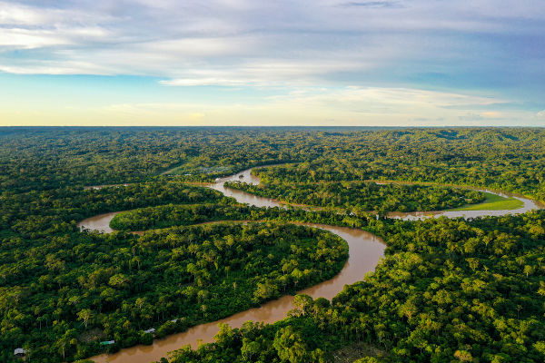
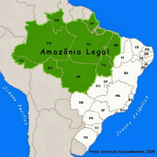
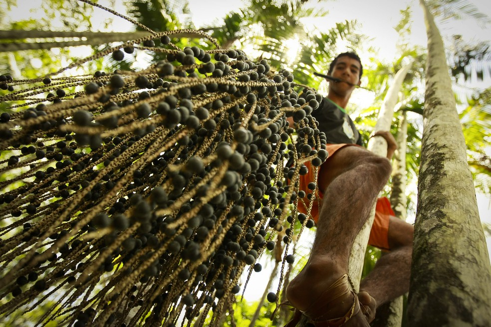
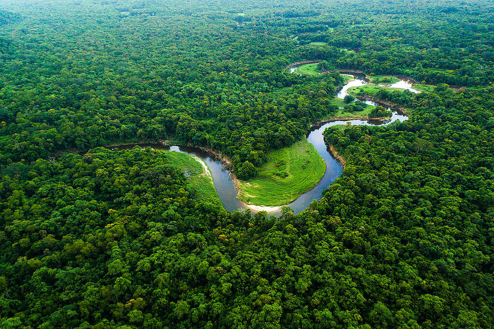

A região Norte, ocupando 45% do território nacional, é a maior do país. É formada pelos estados do Acre, Amapá, Amazonas, Pará, Rondônia, Roraima e Tocantins. Sua população, com cerca de 17,3 milhões de pessoas (IBGE, 2022), corresponde a menos de 9% dos brasileiros, o que resulta na menor densidade demográfica do país. Entretanto, sua taxa de crescimento demográfico é superior à média nacional. Na economia, essa região responde por aproximadamente 5,9% do Produto Interno Bruto (PIB) nacional (IBGE, 2019).
A ocupação e a exploração da região Norte durante a colonização ficaram limitadas às áreas adjacentes ao rio Amazonas para extração de recursos vegetais (drogas do Sertão) - além de ações de catequização de indígenas.
A região passou por intensa exploração de látex das seringueiras durante o ciclo da borracha, entre os séculos XIX e XX. A partir da década de 1960, passou a receber grandes projetos de infraestrutura e políticas de desenvolvimento econômico que provocaram significativos problemas socioambientais.

Imagem 1: A exuberância da Floresta Amazônica, resultado da interação entre o clima equatorial, a vasta rede hidrográfica e a vegetação.
As paisagens naturais do Norte resultam de uma interação entre o Clima equatorial (quente e chuvoso), a vasta rede hidrográfica e a floresta, também do tipo equatorial, representada pela exuberante formação da Floresta Amazônica.
Outra definição intimamente associada à Região Norte do Brasil, ainda que abrangendo os estados do Maranhão (Nordeste) e do Mato Grosso (Centro-Oeste), é a Amazônia Legal.
A definição de Amazônia Legal foi estabelecida pelo governo federal em 1953, com o objetivo de organizar os programas de incentivo ao desenvolvimento econômico e à ocupação da Região Amazônica. A Amazônia Legal ocupa os estados do Acre, Amapá, Amazonas, Mato Grosso, Pará, Rondônia, Roraima, Tocantins e parte do Maranhão, correspondendo a cerca de 60% do território nacional.

Imagem 2: Delimitação da Amazônia Legal, que abrange a Região Norte e partes do Maranhão e Mato Grosso.
A Floresta Amazônica como um todo, porém, ocupa uma área de aproximadamente 7 milhões de km², não se restringindo apenas ao território brasileiro. A área da floresta ultrapassa os limites nacionais, estendendo-se por outros países situados na América do Sul, como Bolívia, Equador, Venezuela e Guiana. No entanto, podemos perceber que é no território brasileiro que está a maior parte da floresta.
Em 1966, o governo federal, ao criar a Superintendência do Desenvolvimento da Amazônia (Sudam), atualmente extinta, tomou a Amazônia Legal como área de atuação desse órgão de planejamento. É muito comum o uso do termo Amazônia brasileira ou Amazônia Legal como sinônimo de Região Norte. No entanto, isso não é correto, pois, se compararmos a área da Amazônia Legal com a área da Região Norte, perceberemos que a Amazônia Legal ocupa uma área maior que a Região Norte.
Até a década de 1960, grande parte das terras da Região Norte pertencia à União, ou seja, ao governo brasileiro. Muitas dessas terras eram ocupadas por populações que obtinham seu sustento da floresta, dos rios e de pequenas lavouras. Essa população era formada, em sua maioria, por povos indígenas e ribeirinhos, que ainda hoje habitam essa região.
A concessão de terras da Região Norte, a partir da década de 1960, pelo governo brasileiro, como parte dos projetos de povoamento, deu início a uma série de conflitos, pois não considerou a presença dos povos indígenas em seus respectivos territórios. Além disso, com a falta de demarcação, era comum a grilagem e a venda de um mesmo terreno para vários compradores - reacendendo conflitos agrários. Quando todos os envolvidos reivindicaram a posse das terras que já estavam ocupadas há séculos, intensificaram-se vários conflitos, que até hoje ocorrem, com amplos registros de mortes.
Há décadas, alguns grupos religiosos e organizações não governamentais (ONGs) atuam na região com o intuito de amenizar os conflitos relacionados à posse de terras, como a Comissão Pastoral da Terra (CPT), o Conselho Indigenista Missionário (CIMI), o Instituto Socioambiental (ISA) e o Greenpeace Brasil.
A ocupação mais efetiva e a exploração realizada pelas atividades econômicas cada vez mais intensas na Floresta Amazônica vêm resultando em uma rápida e progressiva devastação dessa formação. Entre as atividades econômicas predatórias e incompatíveis com sua preservação, destacam-se:
De acordo com cálculos do Projeto de Monitoramento do Desmatamento na Amazônia Legal por Satélite (PRODES) e do Instituto Nacional de Pesquisas Espaciais (Inpe), cerca de 17% da floresta já foi devastada. A derrubada da floresta prossegue em ritmo acelerado, com cerca de 10 mil km² perdidos a cada ano.
Um exemplo de iniciativa que envolve o manejo sustentável dos recursos da floresta Amazônica é o extrativismo sustentável do açaí, realizado por alguns habitantes de áreas rurais localizadas na Região Norte do país.
Essa iniciativa, além de evitar o desmatamento da floresta Amazônica, gera uma boa renda com a venda do açaí. O açaí é o fruto de uma palmeira que cresce naturalmente na floresta. Por isso, sua extração depende da manutenção da floresta em pé.

Imagem 3: O extrativismo sustentável do açaí é um exemplo de atividade econômica que depende da conservação da floresta.
A história da ocupação da Amazônia pelos europeus e a do extrativismo nessa região caminham juntas. A extração das drogas do sertão (guaraná, anil, urucum, copaíba, pau-cravo e castanha-do-pará) orientou as invasões portuguesas ao interior do território durante o período colonial. A priori, a extração das drogas do sertão se deu por monopólio dos religiosos, que exploravam a mão de obra indígena.
No começo do século XIX, iniciou-se a extração comercial do látex para a produção da borracha, que se tornou um produto essencial para a crescente indústria automobilística global. Dessa forma, as cidades de Belém (PA) e Manaus (AM) se desenvolveram economicamente e começaram a se estruturar enquanto metrópoles.
Outra grande riqueza é a diversidade de madeiras nobres. Historicamente, a exploração desse recurso ocorreu de forma descontrolada e ilegal. Uma das estratégias para reduzir o desmatamento ilegal foi a difusão de técnicas que possibilitam o manejo florestal sustentável e a geração de empregos. No entanto, o desmatamento ilegal continua sendo um grande problema, afetando negativamente o equilíbrio ecológico e climático.
A exportação de minérios é uma das principais atividades econômicas do Brasil, e as regiões amazônicas são ricas em minérios. Contudo, a exploração mineral gera grandes intervenções no meio ambiente e pode acarretar graves problemas socioambientais. Grandes empresas estrangeiras atuam no setor, o que limita os ganhos para a economia do país.
O garimpo na Região Norte exerce intensa pressão socioambiental ao provocar desmatamento, assoreamento de rios e contaminação por mercúrio, afetando gravemente a fauna, a flora e a qualidade da água. A atividade, muitas vezes ilegal, invade terras indígenas e unidades de conservação, gerando conflitos.
A partir da década de 1970, o Governo Federal investiu na geração e no fornecimento de energia elétrica para atender à demanda crescente. A necessidade vinha da ocupação agropecuária, da crescente industrialização de Manaus e do suporte aos empreendimentos minero-metalúrgicos. Todo processo teve um forte impacto nos recursos hídricos locais.
A construção de usinas hidrelétricas foi responsável por deslocar populações e submergir centenas de espécies da fauna e da flora, reduzindo a biodiversidade, a exemplo dos casos de Tucuruí (PA) e Balbina (AM), e, mais recentemente, de Jirau (RO), Santo Antônio (RO) e Belo Monte (PA).
A Amazônia tornou-se um foco de preocupação dos ambientalistas de todo o mundo. A importância ecológica da floresta é baseada em alguns pontos, como a preservação da biodiversidade e o papel na absorção de CO2. A tese de que a “Amazônia é o pulmão do mundo” não é correta, pois a floresta consome quase todo o oxigênio que produz. As grandes responsáveis por abastecer o planeta de O2 são as algas oceânicas.
Contudo, a floresta responde por grande absorção de CO2, fixando o carbono, um importante serviço ecossistêmico. Outro serviço ecossistêmico corresponde à regulação climática em escalas regionais, gerando massas de ar úmidas que são levadas ao sul, irrigando as regiões Centro-Oeste e Sudeste. Esse fenômeno é conhecido como “rios voadores”.

Imagem 4: A Floresta Amazônica fornece serviços ecossistêmicos vitais, como a regulação climática e a absorção de CO2.
A Serra dos Carajás, localizada no estado do Pará, é uma área rica em diversos minérios, especialmente de ferro, alumínio (bauxita), ouro, estanho (cassiterita), manganês, níquel e cobre. Para explorá-los, foi implantado o Projeto Carajás (1979 e 1986), com investimentos em infraestrutura de transportes (ferrovias e portos) e usinas hidrelétricas (como Tucuruí).
A Estrada de Ferro Carajás liga a Serra dos Carajás ao Porto de Itaqui, em São Luís (MA), e desempenha um papel importante no escoamento do minério. O Projeto Carajás atrai investidores de diversos países, mas a atividade mineradora também causou graves impactos na vegetação e no relevo.
O modelo de ocupação e de exploração econômica da Amazônia, sobretudo a partir da década de 1960, esteve apoiado em atividades incompatíveis com a conservação da floresta. Fatores como solo raso e pouco fértil limitam o desenvolvimento da agropecuária em grande parte da floresta Amazônica.
A solução é explorar a floresta de maneira sustentável, racionalizando a extração dos recursos para conservar a mata. Práticas sustentáveis garantem o desenvolvimento de atividades econômicas e conservam a biodiversidade. No caso da exploração madeireira, o ideal é o manejo florestal sustentável, técnica que consiste em derrubar apenas as árvores adultas, após atingirem determinado tamanho, evitando a derrubada das árvores mais jovens.
1. Qual é a porcentagem aproximada do território brasileiro ocupada pela Região Norte?
2. Qual é a principal característica climática da Região Norte?
3. O que é a Amazônia Legal?
4. Qual atividade econômica é exemplo de manejo sustentável na Amazônia?
5. Qual é a principal causa do desmatamento na Amazônia?
6. Qual órgão foi criado em 1966 para planejar o desenvolvimento da Amazônia?
7. Qual é a importância ecológica da Amazônia?
8. O que são os 'rios voadores'?
9. Qual minério é destaque na Serra dos Carajás?
10. Qual impacto das hidrelétricas na Amazônia?
11. Qual é a densidade demográfica da Região Norte em relação ao Brasil?
12. Qual produto impulsionou o ciclo econômico da borracha?
13. Qual técnica reduz o impacto da exploração madeireira?
14. Qual é a área aproximada da Floresta Amazônica?
15. Qual fenômeno climático é influenciado pela Amazônia?